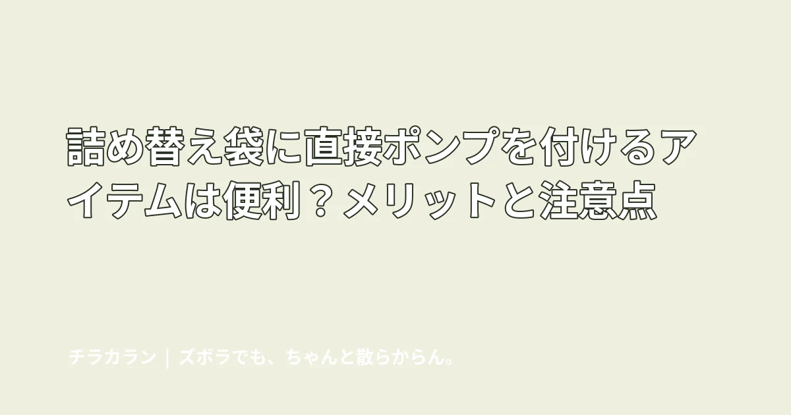

詰め替え袋に直接ポンプを付けるアイテムは便利？メリットと注意点
シャンプーなどの詰め替えパウチへ直接取り付けるタイプは、移し替えの手間を減らせる一方、対応パウチや取り付け方の確認が必要です。

結論：詰め替え作業が嫌いな人とは相性がいい
詰め替え袋へ直接ポンプやノズルを取り付けるタイプは、ボトルへ中身を移す作業を省けるのが最大のメリットです。
何がラクになる？
- ボトルへ注がなくていい

- こぼすリスクを減らしやすい
- ボトルを洗って乾かす管理を減らせる
- 吊り下げ式なら棚の掃除もしやすい
買う前に確認したいこと
すべての詰め替え袋に共通で使えるとは限りません。パウチの口や厚み、容量、粘度など、商品の対応条件を確認します。
家族が使いやすいかも大事
押す力や出る量、吊り下げ位置によって使い勝手が変わります。子どもが使う場合などは高さにも注意します。

向いている人
特に「詰め替えを後回しにして空ボトルが浴室に残る」「注ぐとよくこぼす」という人には検討しやすい方法です。
まとめ
便利グッズを増やすことが目的ではなく、嫌いな家事を1つ消せるかが判断基準。対応条件を確認して、自宅の運用に合うなら有力です。
この悩みで使いやすいアイテム
当サイトはアフィリエイト広告を利用しています。
詰め替えそのまま シャンプー ポンプ
ショップ連携後に購入先ボタンが表示されます。
チラカランの考え方
頑張る回数を増やすより、頑張らなくても回る仕組みを。